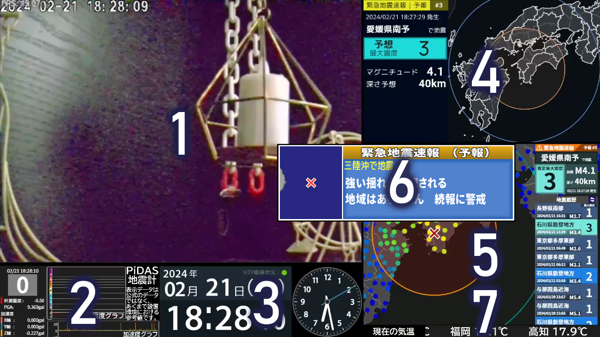

配信画面
使用機器
① : カメラ (Topo-C200)
② : PiDASplusGraph (ingen様)※PiDASが必要
③ : FileKyoshin (自作 非公開)
④ : EQjtc (自作 非公開)
⑤ : P2PNoticingInfoMap (自作 非公開)
⑥ : QuapInfo (自作 非公開)
⑦ : リアルタイム地震ビュアー(ことほの様)
⑦ : WeatherQuakeTelop for MGNT (自作 非公開)
配信機器
CPU : FX-8350 4.0GHz 8コア 8スレ
RAM : DDR3-???? 8GB
GPU : GeForce GTX 530Ti
Hw : HDD-1TB
電源容量 : 450W